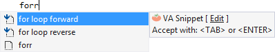
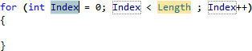
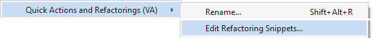

VA Snippets
Insert commonly used code with VA Snippets, a feature of Visual Assist more powerful than built-in code snippets. VA Snippets expand when you type or select a shortcut. Special VA Snippets define the format of refactored and generated code. Other VA Snippets prompt for input when expanded.


Access the custom editor for VA Snippets via the context menu of the text editor.

Learn more.